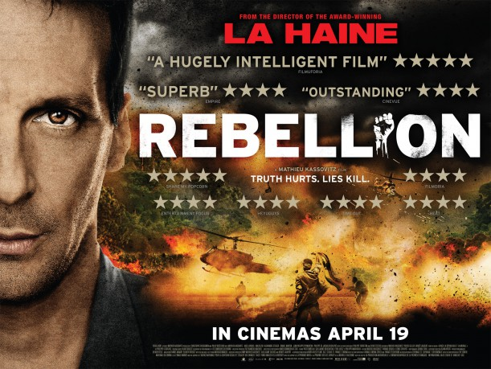

#2561 Rebellion
 
 IMDB-Wertung: 7.0 / 10
IMDB-Wertung: 7.0 / 10  Metascore: 0
Metascore: 0 
April 1988, Philippe Legorjus (Mathieu Kassovitz), Verhandlungsspezialist und Chef einer Anti-Terror-Einheit, wird in den Pazifik abkommandiert. Rebellen haben im französischen Überseegebiet Neukaledonien einen Stützpunkt der Polizei überfallen und 30 Geiseln genommen. Neben Legorjus' Truppe werden auch 300 Soldaten entsandt. Während das Militär auf ein schnelles Eingreifen drängt, gewinnt Legorjus allmählich das Vertrauen des Anführers der Rebellen. Doch in Frankreich stehen bald Präsidentschaftswahlen an, und weder François Mitterand noch Jacques Chirac wollen vor ihrem Volk als Schwächlinge dastehen...
Jahr: 2011
Dauer: 136 Minuten
FSK: 16
Land: Frankreich Studio: Capelight PicturesTonspuren: DTS - ,
Untertitel: Deutsch, Französisch,
Auflösung: 1080p (1920x824) Größe: 10444 MB
Genre: Action, Drama
Regisseur:  Mathieu Kassovitz
Mathieu Kassovitz
Drehbuch: Mathieu Kassovitz, Pierre Geller, Benoît Jaubert, Serge Frydman, Philippe Legorjus
Soundtrack: Klaus Badelt
Darsteller:
 Mathieu Kassovitz als Philippe Legorjus
Mathieu Kassovitz als Philippe Legorjus Philippe Torreton als Christian Prouteau
Philippe Torreton als Christian Prouteau Sylvie Testud als Chantal Legorjus
Sylvie Testud als Chantal Legorjus Jean-Philippe Puymartin als Général de Gendarmerie Jérôme
Jean-Philippe Puymartin als Général de Gendarmerie Jérôme- Simon-Pierre Boireau als Bernard GIGN
- Iabe Lapacas als Alphonse Dianou
 Malik Zidi als JP Perrot
Malik Zidi als JP Perrot- Alexandre Steiger als Jean Bianconi
- Daniel Martin als Bernard Pons
- Steeve Une als Samy
- Philippe de Jacquelin Dulphé als Général de brigade Vidal
- Patrick Fierry als Colonel de l'armée Dubut
- Stefan Godin als Lieutenant Colonel de Gendarmerie Benson
- François 'Kötrepi' Neudjen als Nine Wea
- Macki Wea als Djubelly Wea
- Alphonse Djoupa als Hilaire Dianou
- Pierre Gope als Franck Wahuzue
- Dave Djoupa als Wenceslas Laveloa
- Henry 'Aïzik' Wea als Chef coutumier Imwone
- Aira 'Toulousie' Gnipate als Tom Tchacko Pasteur
- Mathias Waneux als Chef Hwadrilla
- Stéphane Delesne als Lieutenant Colonel Arthur 11ème Choc
- Jean-Christophe Drouard als Capitaine Jayot Commando Hubert
- Aladin Reibel als Général brigade aérienne Norlain
- Elric Covarel Garcia als Chef Etienne GIGN
- Marc Robert als Marco GIGN
- Olivier Rousset als Eric GIGN
- Armel Cessa als Armel GIGN
- Mathieu Lardier als Mathieu GIGN
- Jérôme Coué als Jérôme GIGN
- Yvan Mariani als Dufour GIGN
- Richard Oger als Paille GIGN
- Mikel Haramboure als Dubois GIGN
- Vincent Heneine als Vinz GIGN Otage
- Vincent Aguesse als Vincent GIGN Otage
- Laurent Alexandre als Larry GIGN Otage
- Emmanuel 'Te Manu Hei Rere Tané' Donfut als Antoine GIGN Otage
- Serge Dupuy als Gaborit GIGN Otage
- Jean-Louis Andrieux als Capitaine Benetti EPIGN
- Arthur Moncomble als Lieutenant Destremeau
- Pierre Poudew als Philippo
- Daniel Wea als Samuel
- Gildas Djoupa als Séraphin
- Valdo Yakeula als Antonin
- Jonas Adeda als Chef des Porteurs de Thé
- Emmanuel Vieilly als Officier Satory
- Jacques Chirac als Himself , archive footage
- François Mitterrand als Himself , archive footage
- Xavier Jozelon als Vincent Moulié , uncredited
- Christophe Rossignon als Militaire , uncredited
Datei: X:\2011(N-Z)\Rebellion (2011, FSK16, 1920x824).mkv seit 23.11.2015
Festplatte: HD 2011(G-Z)
 Es gibt insgesamt 132 Filme in der Gruppe '2011(N-Z)'
Es gibt insgesamt 132 Filme in der Gruppe '2011(N-Z)'